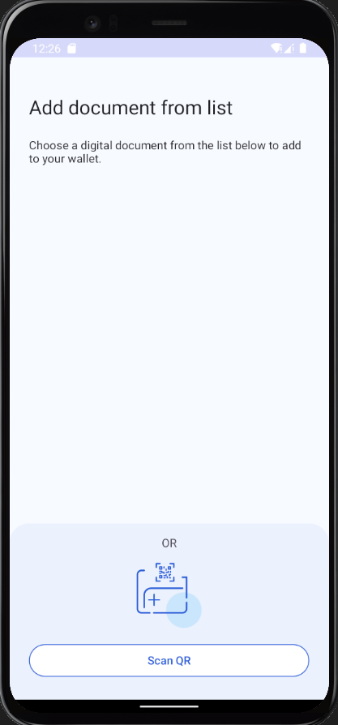
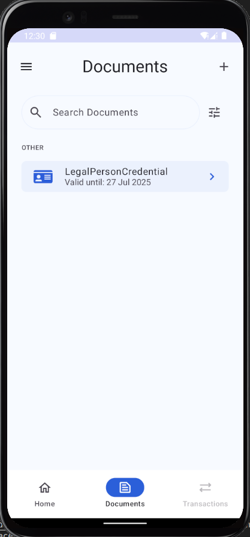
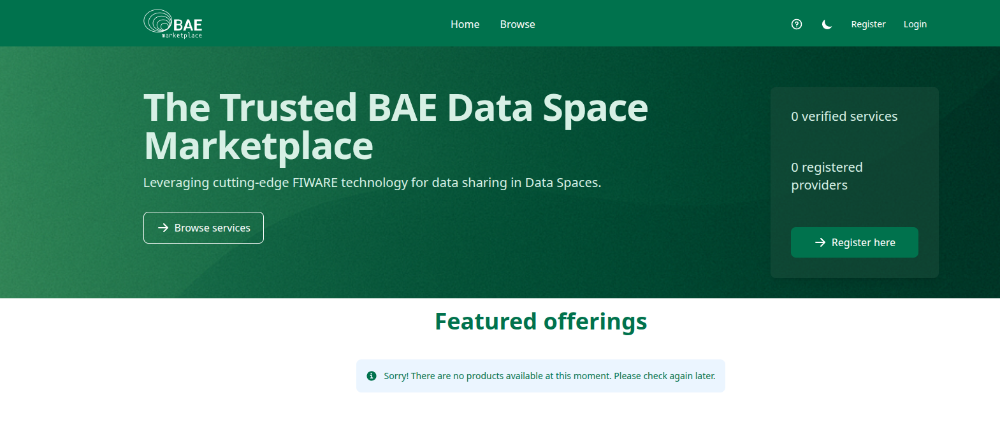
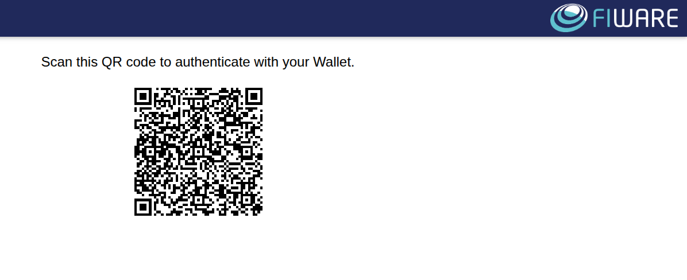
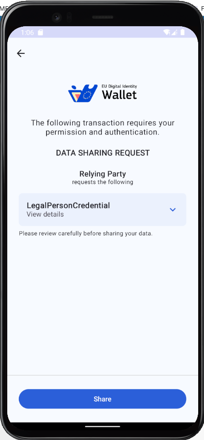
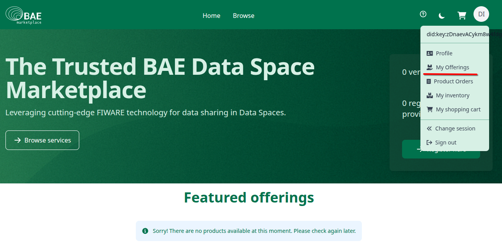
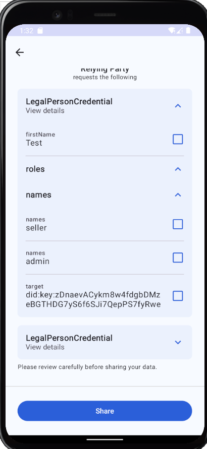
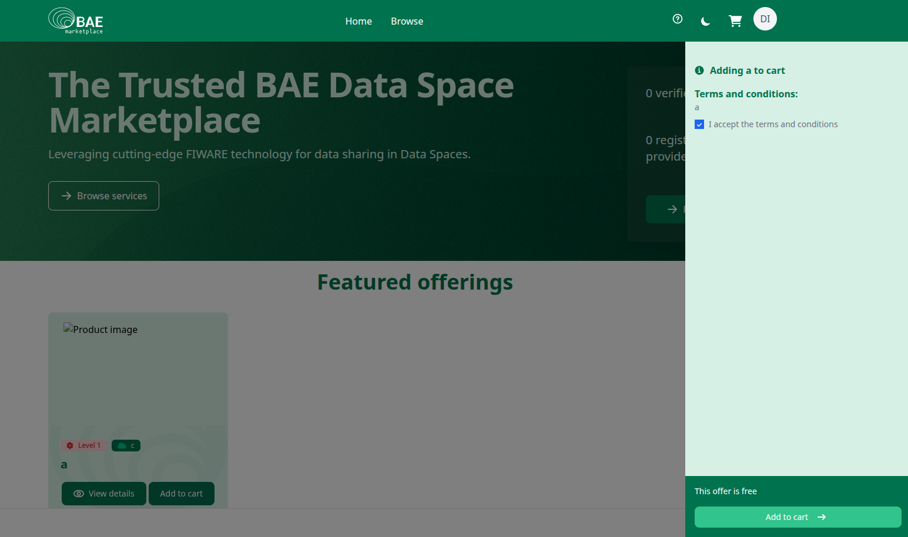
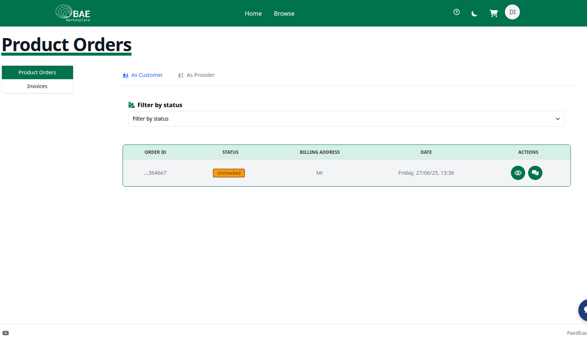
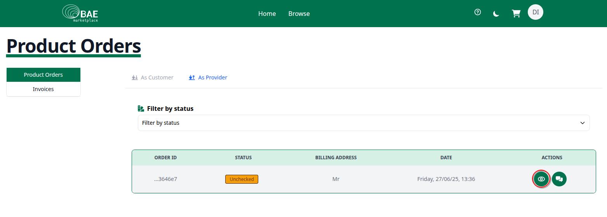

Marketplace integration¶
In order to offer data and data services or buy them, the FIWARE Data Space Connector supports the integration with the FIWARE BAE Marketplace. It can be enabled through the marketplace.enabled: true configuration.
To set up a marketplace in your own provider deployment - MongoDB, the values, the login with Verifiable Credentials - see Running a local marketplace. This document describes the demo in the local deployment.
Demo Usage¶
The Marketplace is integrated into the Local Deployment. To prepare the DEMO interaction, deploy it via mvn clean deploy -Plocal. Since it contains a frontend and needs to integrate with a wallet, the deployment contains Squid as an https-forward-proxy in order to delegate DNS-resolution directly to the Traefik-Ingress Controller. Follow the documented steps to prepare the demo.
The Wallet¶
In order to receive Verifiable Credentials and present them to the Marketplace via OID4VP, the EUDI Android Wallet is used. Since the local environment uses self-signed certificates, an apk with certificate validation disabled is provided here. DO NOT USE THIS VERSION FOR PRODUCTION USE-CASES!
For using the wallet, two options exist - with a connected Mobile Phone or with an locally installed Android Emulator.
Mobile Phone¶
To setup your (Android) Mobile Phone, the following is required:
- enable the
Developer-Modeon the phone -> Android Documentation - download the Wallet App -> Wallet on Google Drive
- install the Wallet through the downloaded APK. Be aware that warnings will be shown, since it does not come from a trusted store
- connect the Mobile Phone with the local network, two options:
- if the machine running the local environment is connected to a WLAN without client isolation: get the IP address of it in the local WLAN(
ip a) - if not, connect the Mobile Phone via USB cable and enable USB tethering: get the IP address in the tethering(
ip a, most likely the last in the list)
- if the machine running the local environment is connected to a WLAN without client isolation: get the IP address of it in the local WLAN(
- on the mobile phone, go to
settings->connections->WLAN - select the local WLAN
- show advanced settings
- set Proxy -> Manual
- Proxy-Hostname:
- Proxy-Port: 8888
Android Emulator¶
Warning
This is only tested on Ubuntu. In other systems, different solutions might be required.
If running on the Mobile Phone is not possible or desirable, the Android Emulator can be used:
- install the Android Studio
- create a Virtual Device(through the device-manager), rename it to an easy typable name(in the example, its 'p-xl-4')
- the image should support Android Version >= 13, min target SDK >= 23, for example an Google Pixel 4 image
- close Android Studio and interact directly with the emulator, its located in the Android-SDK folder(most likely something like ~/Android/Sdk/emulator)
Since retrieving and presenting Credentials requires scanning an QR-Code from the screen, the screen-output needs to be presented to the emulator camera: * install and enable the v4l2loopback kernel module:
* find you virtual camera: * stream the screen to the virtual camera, using FFmpeg: sudo apt install ffmpeg
# streams the top left 200x200px rectangle from the screen to the virtual device
ffmpeg -f x11grab -video_size 1024x768 -i :0.0+200,200 -f v4l2 -pix_fmt yuv420p <NAME-OF-THE-CAMERA-DEVICE>
Once this is done, the camera can be connected to the emulator: * check the name of the camera connected to the virtual device in the emulator:
* start the emulator, with the camera configured as the back-camera # webcam2 is the virtual camera in our example, webcam0 is any other cam in the system, p-xl-4 is the device, hardware accelaration is on
# Vulkan is required for proper browser rendering an api >29
~/Android/Sdk/emulator/emulator -avd p-xl-4 -camera-back webcam2 -accel on -no-snapshot-load -feature -Vulkan -grpc 8554
- download the apk from https://drive.google.com/file/d/10NT5uX1uLwjI2D_XoE1eqmarv8Wo61hO/view?usp=sharing
- install the apk to the device:
Tip
When first starting the app on the device, an error will be displayed. This is due to not having a Personal ID available in the demo environment and wallet and can just be ignored.
Debug the wallet¶
In order to the debug any issues, adb logcat can be used:
# get the concrete name of the wallet
* adb shell pm list packages | grep euid
# get pid of the package
* adb shell pidof <your.package.name>
# get logs of the app
* adb logcat | grep pid
The Marketplace¶
In order to access the marketplace on the local browser, the browser needs to proxy its requests through squid. The easiest solution is to use Chrome/Chromium with the FoxyProxy Plugin.
- install FoxyProxy into the browser
- go to "options" -> "proxies" -> Add a proxy with:
- Type HTTP
- Hostname 127.0.0.1
- Port 8888
When enabled, every request will be routed through the squid-proxy inside the local environment.
Usage¶
In order to test the marketplace integration, a Provider and a Consumer will be required. For both, Verifiable Credentials will be required. In the example, Credentials for both Participants will be in the same wallet. In real environments, every user will have its own wallet.
Warning
All interactions need to happen in the proxied browser.
Warning
When the pages are first opened in the browser, a certificate warning will be shown. The local environment uses self-signed certificates, add an exception for those sites.
The following flow will enable a customer to use a service offered by the provider by presenting an "OperatorCredential". The data-service is available for M2M-interactions, thus the flows described in the Local Deployment can be used. To test that the service is not available before the process, do the following steps:
-
Create an identity for the Consumer Service:
-
Export the holder-did:
-
Get the "OperatorCredential":
-
Try to get an access-token from the Provider - nothing should be returned:
./doc/scripts/get_access_token_oid4vp.sh http://mp-data-service.127.0.0.1.nip.io:8080 $OPERATOR_CREDENTIAL operator
Now, buy access to the service.
Get a credential as "seller" and login to the marketplace¶
In order to offer something at the marketplace, the provider needs to issue a credential, containing the "seller"-role to one of its employees.
- Access the provider keycloak at
https://keycloak-provider.127.0.0.1.nip.io/realms/test-realm/account/oid4vci - Login with
employee@provider.org- Password:test - Open the wallet in the emulator and click on "Scan QR":

* In Keycloak, goto the "VerifiableCredentials" section and select "user-sd" * Move the QR in the camera field and follow the flow (BE AWARE: every QR is only valid for 30s, if it times out, reload the page) * The credential should now be shown in the "Documents" section of the app:
* Open the marketplace athttps://marketplace.127.0.0.1.nip.io/

* Click on login, a QR will be shown:
* In the Wallet, select "Home" -> "Authenticate" -> "Online" and scan the QR * Share the requested credential *
Create the offering¶
An offering has to be created and launched for customers to be bought.
- In the marketplace, move the "My Offerings"-Section

- Create a Catalog and a ProductSpecification, set both to state "Launched"
- Create an Offering, referencing the Catalog and Specification.
- leave the PricePlan empty, the local environment does not have any payment integration
- set Procurment Mode to "manual"
- Set it also to "Launched"
- Logout
Get a credential as "customer" and login to the marketplace¶
In order to buy, an organization has to issue a credential containing the "customer"-role to one of its employees.
- Access the consumer keycloak at
https://keycloak-consumer.127.0.0.1.nip.io/realms/test-realm/account/oid4vci - Login with
employee@consumer.org- Password:test - In the wallet, go to the documents section and click on "+"
- In Keycloak, goto the "VerifiableCredentials" section and select "user-sd"
- Move the QR in the camera field and follow the flow (BE AWARE: every QR is only valid for 30s, if it times out, reload the page)
- Both credentials should now be shown in the "Documents" section of the app
- Open the marketplace at
https://marketplace.127.0.0.1.nip.io/ - Click on login, a QR will be shown
- In the Wallet, select "Home" -> "Authenticate" -> "Online" and scan the QR
- In the sharing request, both credentials will be shown:
* Open the credential and disable sharing of the "seller"-credential:

Buy access¶
In order to get access to the service, the offering has to be bought.
- In the marketplace, now select the service and add it to your cart

* Click on the cart button and "Proceed to purchase" * Fill out the billing address and click on the checkout button. The order will now be created in state "Unchecked"
* LogoutProcess the order¶
The created order now needs to be processed from within the backoffice of the provider.
- Login with the "seller"-credential(see customer-login)
- Move to the "Product Order"-Section and open "As Provider"
- Review the order, using the "Review"-Button

* Move the Order forward, until its in state "completed"Once the order is completed, the offering is bought and the customer can use the service. Try to get an access-token again - this time an access-token should be returned: